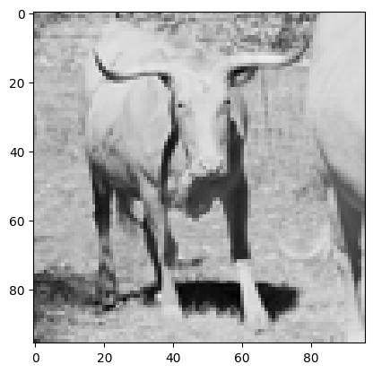
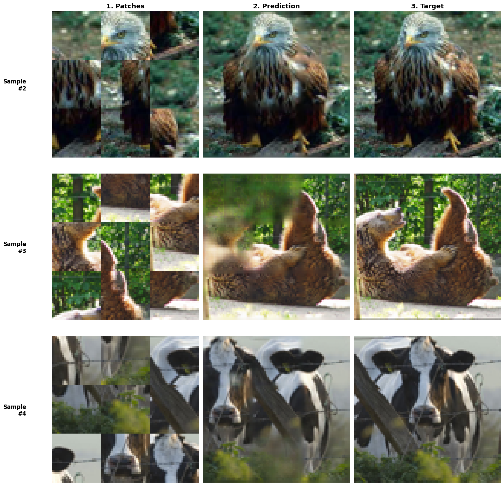

Orden desconocido
Las 9 piezas vienen de una grilla 3×3, pero llegan permutadas. El modelo debe descubrir qué pieza corresponde a cada posición.
Proyecto de visión por computador
El modelo recibe 9 parches RGB de 28×28, descolocados y con los bordes erosionados, y debe devolver la imagen original de 96×96 sin atajos geométricos ni algoritmos clásicos.
No basta con pegar las piezas. El rompecabezas es ambiguo: falta información de borde y el orden espacial es desconocido. La red tiene que inferir la disposición correcta y rellenar el contenido visual que se eliminó al recortar cada parche.
Las 9 piezas vienen de una grilla 3×3, pero llegan permutadas. El modelo debe descubrir qué pieza corresponde a cada posición.
Cada celda original es 32×32, pero se recorta al centro 28×28. Se pierde el marco que permitiría encajar piezas por continuidad de borde.
Además de ordenar, hay que inpainting: completar huecos y producir una imagen 96×96 continua, sin artefactos de ensamblaje.
Datos
Se usa el conjunto no etiquetado de Stanford STL-10: 100.000 imágenes a color de resolución nativa 96×96, con 10 clases visuales. Es un recorte natural para este problema porque la salida del modelo coincide exactamente con el tamaño de cada imagen.
El generador recorta 9 parches 32×32, recorta el centro a 28×28 y aplica una permutación aleatoria. La etiqueta es la imagen completa normalizada en [0, 1].

Diseño
El modelo Jigsaw_Model es un pipeline 100% neuronal: entiende cada parche, infiere una permutación válida, arma un lienzo 96×96 y completa los huecos con una U-Net residual.
Tensor (B, 9, 28, 28, 3). Nueve piezas RGB desordenadas por batch.
CNN TimeDistributed con convoluciones 64→128→256. Extrae un vector de 256 dimensiones por parche, sin mirar aún el contexto global.
Embeddings posicionales + 2 bloques de atención multi-cabeza (8 cabezas). Modela relaciones entre piezas para decidir el orden relativo.
Capa personalizada que convierte logits 9×9 en una matriz doblemente estocástica. Fuerza una asignación 1 a 1, no un simple softmax independiente.
La matriz de permutación reordena los parches originales, no solo sus embeddings. Se conserva la textura real de cada pieza.
Cada pieza se rellena a 32×32 y se coloca en una grilla 3×3. El canvas 96×96 queda con grietas: el material que se erosionó al generar el dataset.
Una U-Net profunda predice un residual sobre el canvas. La suma pasa por sigmoid para devolver píxeles en [0, 1] y una imagen continua.
El Transformer propone un orden; Sinkhorn lo vuelve una permutación válida. La U-Net no tiene que “inventar” el layout: solo rellena juntas y refina la textura. Esa separación mantiene el modelo por debajo de 6M de parámetros.
Pesos entrenados
Los pesos se publican como un archivo .keras descargable con gdown,
tal como exige el enunciado. En el Colab se cargan con load_model(..., safe_mode=False)
para registrar la capa personalizada SinkhornRouting.
import gdown
from keras.models import load_model
file_id = "1HxgJPoTr0JcFl2NoyQA8dX_RkPzwfzxo"
url = f"https://drive.google.com/uc?id={file_id}"
gdown.download(url, "best_jigsaw_model.keras", quiet=False)
jigsaw_model = load_model("best_jigsaw_model.keras", safe_mode=False)Prueba interactiva
Sube una foto. La página la recorta a 96×96, genera 9 parches 28×28 desordenados y reconstruye la imagen.
Solución completa
Abajo ves las salidas reales del notebook del repositorio. Descárgalo para abrirlo en Google Colab o ejecutarlo en local con el mismo entorno que en el proyecto.
Resultados
La métrica oficial es MAE sobre el test set, con su desviación estándar. El baseline ingenuo —repetir el parche medio y reescalar— sirve de referencia.
Baseline · parche medio
0.18264 MAE ± 0.00100Jigsaw_Model · test
0.04853 MAE ± 0.04650El mejor val_loss guardado por checkpoint fue 0.04751. En las últimas épocas el MAE de entrenamiento se estabilizó cerca de 0.0438.
4.97M parámetros totales, 4.97M entrenables. Queda ~1M por debajo del tope de 6 millones.
En las muestras de test, el modelo recoloca las piezas y rellena juntas. El error residual se concentra en texturas finas, no en el layout.
